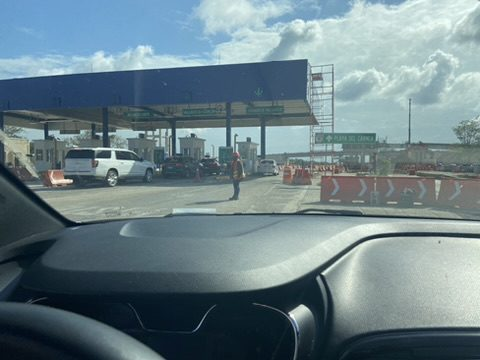
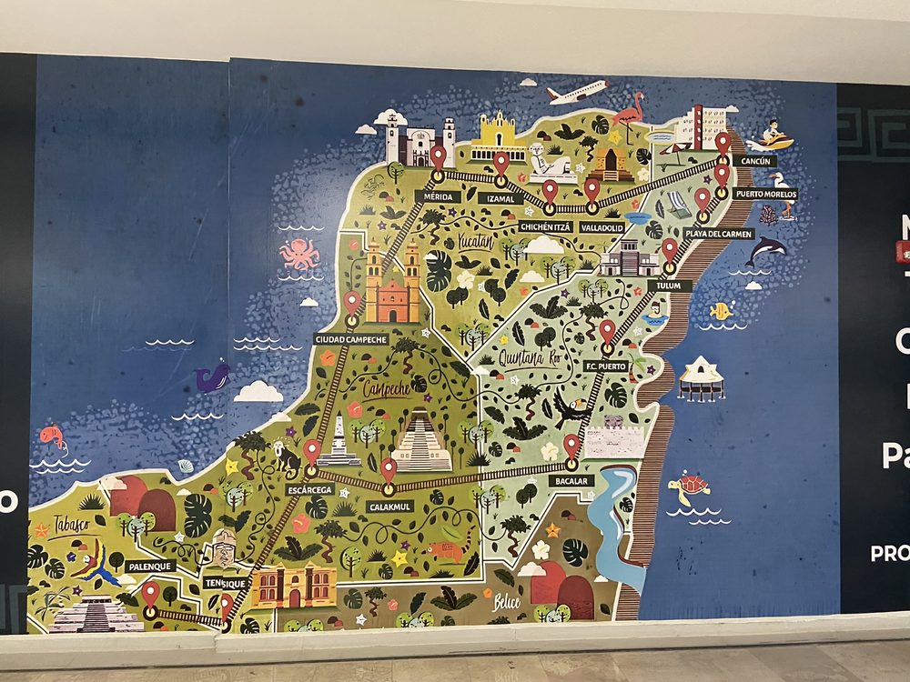
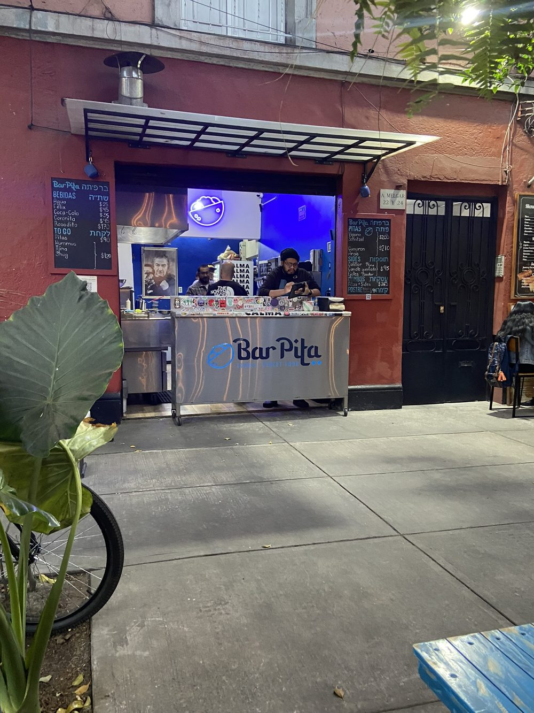
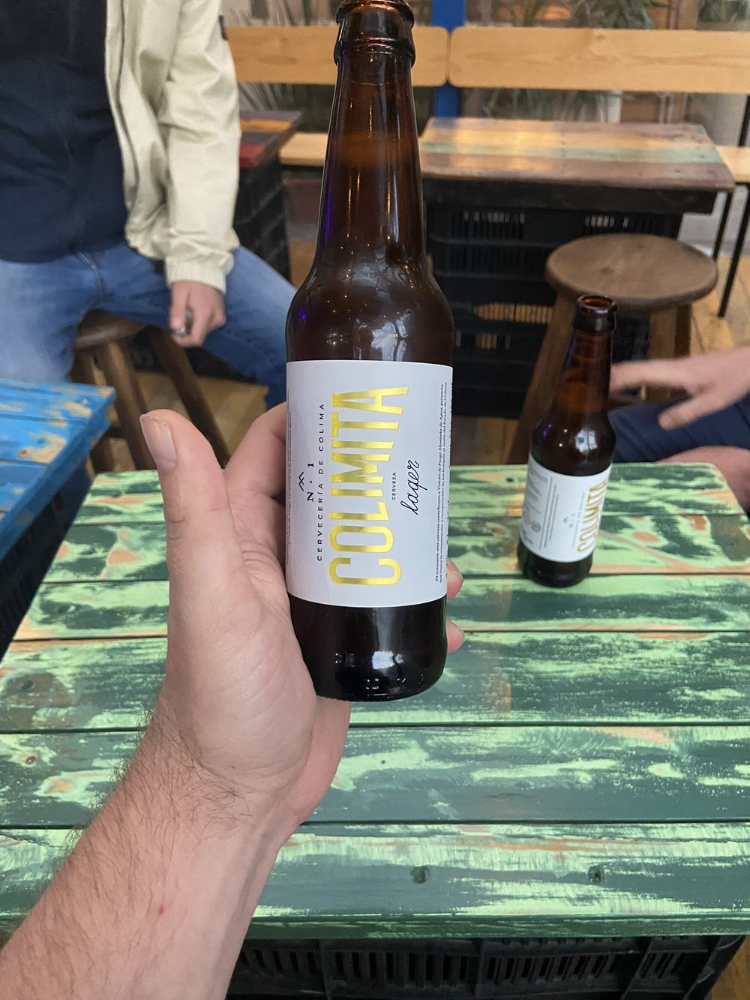
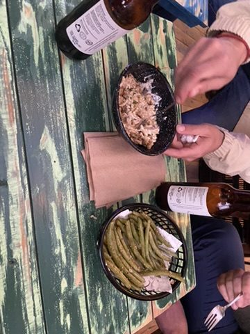
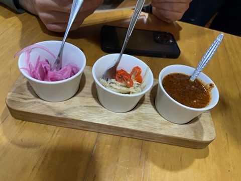
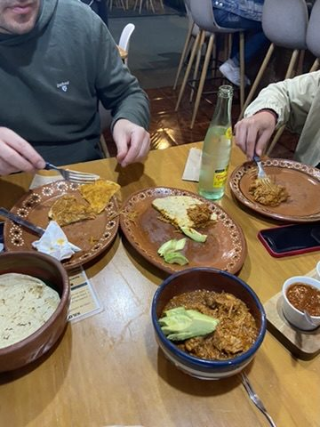

Zurück in die Hauptstadt: Auto abgeben, Rückflug in die Hauptstadt – diesmal zum neuen Flughafen Felipe Ángeles (AIFA), 2022 auf einem Militärgelände rund 45 km nördlich der Stadt eröffnet. An der Wand eine illustrierte Karte der Halbinsel, die wir gerade hinter uns lassen.


Abend in Condesa: Zurück in unserem Viertel: Craft-Bier an einem kleinen Stand, danach Abendessen mit Salsas und mexikanischer Hausmannskost.




